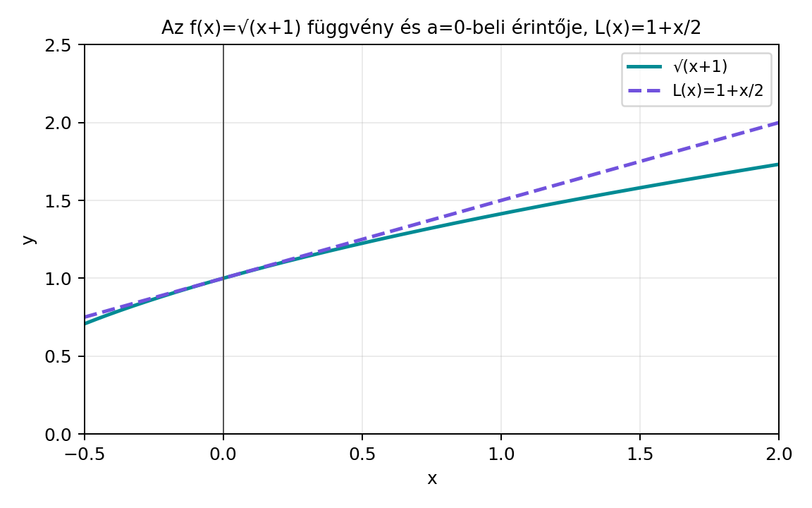

A lineáris közelítés az analízis egyik leghasznosabb ötlete:
bonyolult függvényeket egy kis környezetben egyszerű egyenessel
helyettesít. Ez a gondolat ott dolgozik a számológép mögött, amikor
gyorsan kiszámítja a gyököt vagy a trigonometrikus értéket, és akkor is,
amikor egy mérnök megbecsli, mekkora hibát okoz a mérési pontatlanság a
végeredményben. Ebben az alfejezetben először pontosan megfogalmazzuk,
hogyan kapjuk a lineáris közelítést, majd a differenciállal
hibabecsléseket végzünk, végül a mérési hibák terjedését és a numerikus
számítások kondicionáltságának alapgondolatát vizsgáljuk.
12.3.1 Szemléletes kép: az érintő
mint helyettesítő görbe
Tekintsük az
függvényt az
pont közelében. Az itt húzott érintő egyenlete:
A következő ábrán a pontos függvény és az érintő grafikonja
látható.

Az f(x)=√(x+1) függvény és a=0-beli
érintője, L(x)=1+x/2 - A grafikonon a folytonos kék görbe a pontos
függvény, a szaggatott egyenes az érintő. Kis x (például x=0,1)
környezetében a két görbe szinte egybeesik; nagyobb x-re eltávolodnak. A
linearizálás hibája x növekedésével gyorsan nő.
Látható, hogy
-nél
a két érték nagyon közeli, például
,
míg
;
a hiba kisebb, mint
.
Ugyanakkor
-nél
a pontos
és a közelítés
már lényegesen eltér. A lineáris közelítés tehát lokális: csak az
pont egy elég szűk környezetében megbízható.
Az alábbi ábra ugyanezt nagyítással mutatja: ha az
körüli ablakot (és vele a függőleges skálát) tízszer szűkítjük, a görbe
egyre inkább az érintővé simul, a hiba pedig nem tizedére, hanem
nagyjából századára csökken:
,
,
,
ahol
.
A log–log grafikonon ez 2 meredekségű egyenes.
Statikus változat (mint a PDF-ben)
Nagyítva a görbe az érintővé simul; a hiba
(három nagyítás és a hiba log–log grafikonja)
függvényt az
függvény
pontbeli linearizálásának vagy
érintőegyenes-közelítésének nevezzük.
A linearizálás geometriailag nem más, mint az
grafikonjához az
pontban húzott érintő egyenlete. Képletként ugyanazt az
egyenesegyenletet ismerhetjük fel.
Definíció. Ha
differenciálható, akkor a
mennyiséget az
függvény differenciáljának nevezzük, ahol
a független változó tetszőleges (gyakorlatban általában kicsi)
növekménye.
A jelölésben fontos a különbségtétel:
a tényleges függvényérték-változás, míg
a lineáris rész. Ha
kicsi, akkor
,
és a hiba gyorsan,
-nél
nagyobb rendben tart nullához.
Definíció. Legyen
a pontos,
pedig a mért vagy közelítő érték. Az abszolút hiba
a relatív hiba pedig
Ha egy
függvény segítségével számolunk tovább, akkor a függvényérték hibáját a
differenciállal közelítjük:
a relatív hibát pedig
12.3.3 Kidolgozott példák lineáris
közelítésre
Példa 1 – Gyökvonás közelítése. Közelítsük
értékét az
pont körüli linearizációval.
A függvény
,
deriváltja
.
Az
pontban
és
.
A linearizálás:
Behelyettesítve
-et:
A pontos érték körülbelül
,
tehát a hiba körülbelül
.
Ez szemlélteti, hogy kis lépésnél a közelítés öt értékes jegyig
pontos.
Példa 2 – Hatványfüggvény közelítése. Az
függvény linearizálása
-nál:
ezért
Például
esetén
,
esetén
,
esetén
.
Ezek a képletek gyors fejszámolásra kiválóak, ha
kicsi.
Ellenpélda – a lineáris közelítés korlátja. Az
függvényt
-nál
linearizálva
;
ez jól közelíti a szinuszt, ha
kicsi. Ugyanez a képlet azonban
esetén
-ot
ad, miközben
.
A hiba itt nem kicsi: a közelítés teljesen használhatatlan. Ezért a
linearizálást mindig az adott pont kis környezetében szabad
alkalmazni.
Tétel. Legyen
kétszer differenciálható az
és
pontokat tartalmazó nyílt intervallumon, és tegyük fel, hogy létezik
olyan
korlát, amelyre
ezen az intervallumon. Ekkor a linearizálás hibájára
Bizonyítási terv. A Lagrange-tételt kétszer
alkalmazzuk: először
-re
az
intervallumon, hogy a különbséget
segítségével fejezzük ki; majd
-re
az
intervallumon, hogy
változását becsüljük. A lépések:
Bizonyítás. Tegyük fel, hogy
;
az
eset azonos módon, csak az intervallum irányaival kezelhető.
Mivel
folytonos
-en
és differenciálható
-en,
a Lagrange-tétel szerint létezik
,
amelyre
A linearizálás hibája így
Mivel
kétszer differenciálható,
folytonos
-n
és differenciálható
-n. Alkalmazzuk
a Lagrange-tételt
-re:
létezik
,
amelyre
Abszolút értéket véve:
mert
miatt
.
Ezzel
∎
Megjegyzés. Az itt kapott
becslés egyszerű, de nem éles. A pontosabb,
-es
együtthatótól függő becslést a A Taylor-formula
maradéktaggal alfejezetben vezetjük le. A numerikus gyakorlatban a
fenti durva korlát is elegendő a hiba nagyságrendjének
megállapításához.
12.3.5 Számolási recept: lineáris
közelítés és hibabecslés
A következő lépéseket érdemes követni:
Válasszuk meg az
pontot az
közelében, ahol
és
könnyen, akár fejben kiszámítható.
Határozzuk meg
és
értékét.
Írjuk fel a linearizálást:
.
Helyettesítsük be a megadott
-et,
és számítsuk ki
-et.
Becsüljük meg a hibát: keressünk olyan
-et,
amelyre
az
és
közötti intervallumon, és számoljuk ki
-et.
Ellenőrizzük az eredmény nagyságrendjét, például
azzal, hogy a közelítő érték valóban közel esik-e a függvény által adott
értékhez.
12.3.6 Valós életbeli alkalmazás:
gömb térfogatának mérési hibája és inga lengésideje
Gömb térfogata. Egy üzemben acélgömböt gyártanak. A
sugár mérése
hibával történik. A térfogat képlete
A térfogat hibáját a differenciállal becsüljük:
Számszerűen
és
értékkel:
A térfogat értéke
.
A relatív hiba:
A sugár relatív hibája csak
,
tehát a térfogat relatív hibája a sugár hibájának háromszorosa. Ez azért
van, mert a sugár a térfogatképletben harmadik hatványon szerepel. A
gyakorlatban ez azt jelenti, hogy ha a térfogatot
-nál
kisebb relatív hibával akarjuk ismerni, a sugarat ennél háromszor
pontosabban, körülbelül
-nál
kisebb relatív hibával kell mérni.
Inga lengésideje és a nehézségi gyorsulás. A
matematikai inga lengésideje
amiből a nehézségi gyorsulás
Tegyük fel, hogy
pontosan ismert, és a lengésidőt
-nek
mérik
hibával. A
hibáját a
szerinti deriválttal becsüljük:
A konkrét adatokkal
,
,
így
Ha
,
akkor
A mért
értéke
,
tehát a relatív hiba
A lengésidő relatív hibája
,
tehát a
relatív hibája kétszer akkora. A modell korlátja, hogy a lineáris
differenciál-közelítés csak kis mérési hibákra érvényes pontosan;
nagyobb hibáknál a magasabb rendű tagok is számítanak, és a valós
mérésnél szisztematikus hibák (például a mérőeszköz kalibrációja) is
felléphetnek.
12.3.7 Lebegőpontos kerekítés és a
kondíciószám ízelítője
A lineáris hibaterjedés szorosan kapcsolódik a numerikus számítások
megbízhatóságához. Ha egy számítógép a bemenő
értéket
gépi relatív hibával tárolja, akkor az
kimenet relatív hibája közelítőleg
A
mennyiséget relatív kondíciószámnak nevezzük. Ha
kicsi (közel
),
a függvény jól kondicionált: a bemeneti hiba nem növekszik. Ha
nagy, a feladat rosszul kondicionált, és a végeredmény megbízhatatlan
lehet.
Példa. Az
esetén
tehát a gyökvonás jól kondicionált, sőt a relatív hiba feleződik.
Ezzel szemben
esetén, ha
közel van
-hez,
nagyon nagy, ezért
is nagy; ilyenkor egy kis bemeneti hiba óriási kimeneti hibát okozhat.
Ez a gondolat a Newton-módszer és numerikus
deriválás alfejezetben és a többváltozós hibaterjedésnél is
visszatér.
A derivált és a differenciál keverése. A
differenciál definíciója
,
nem pusztán
.
A
függ a
növekménytől; ha elhagyjuk, az eredmény mértékegysége sem stimmel.
Rossz
pont kiválasztása. A
közelítéséhez
rossz választás, mert
nem értelmezhető; az
vagy
jó választás. Az
-t
úgy kell megválasztani, hogy
és
könnyen számítható legyen.
A hiba előjelének hibás kezelése. A hibaterjedésnél
mindig abszolút értéket használunk, mert a hiba nagyságát keressük; a
derivált előjele önmagában nem ad felső becslést. A
formulában a pontos előjel tükrözi a változás irányát, de a maximális
hibát
adja.
A lineáris közelítés alkalmazása nagy lépésre hibabecslés
nélkül. Amint az ellenpélda mutatta, a szinusz lineáris
közelítése
-nál
csak kis
-re
jó. Mindig ellenőrizzük a hibabecslést, mielőtt elfogadjuk az
eredményt.
A relatív hiba rossz nevezővel való számolása. A
relatív hibát a pontos értékkel osztjuk, nem a közelítővel. Ha a pontos
érték nem ismert, a gyakorlatban a mért vagy becsült értékkel is szokás
osztani, ilyenkor ezt expliciten jelezni kell.
12.3.9 Önellenőrzés
Igaz vagy hamis? Ha
differenciálható
-ban,
akkor
a legjobb lineáris közelítés abban az értelemben, hogy a hiba
esetén gyorsabban tart nullához, mint
.
Írjuk fel
linearizálását
-nél,
és ennek segítségével közelítsük
értékét.
Mi a különbség
és
között egy
függvény esetén?
Ha
,
akkor mennyi a térfogat relatív hibája a sugár relatív hibájához
képest?
Igaz vagy hamis? A
képlet csak nagyon kicsi
értékre érvényes.
12.3.10 Feladatok
1. feladat (A). Írjuk fel
linearizálását
-nél,
és számítsuk ki ezzel
közelítő értékét. Mennyi a pontos értékhez viszonyított hiba
nagyságrendje?
2. feladat (A). Vezessük le az
függvény
-beli
linearizálását, majd ennek segítségével adjunk becslést
-re.
3. feladat (B). Legyen
,
.
Adjuk meg
-et,
számítsuk ki
közelítését, és adjunk felső becslést a hibára a tétel felhasználásával,
ha
.
4. feladat (B). Egy gömb sugarát
-nek
mérik
hibával. Becsüljük a térfogat abszolút és relatív hibáját a
differenciállal.
5. feladat (C). Bizonyítsuk be, hogy ha
differenciálható
-ban,
akkor a linearizálás hibája kicsi abban az értelemben, hogy
(A feladat eredménye arra utal, hogy a lineáris közelítés hibája
által meghatározottnál magasabb rendben tűnik el; ez vezet a Taylor-polinomok alfejezethez.)
6. feladat (C). Mutassuk meg, hogy ha
kétszer differenciálható és
az
és
közötti intervallumon, akkor ugyanezen feltételek mellett
.
(Útmutatás: a
függvényre, alkalmas
-val,
alkalmazzuk kétszer a Rolle-tételt.)
7. feladat (D). Egy matematikai inga hossza
.
A lengésidőt
-nek
mérik
hibával. Számítsuk ki
-t,
és adjunk becslést a
abszolút és relatív hibájára a differenciál segítségével. (Ez a feladat
előkészíti a Totális derivált, érintősík és
linearizálás alfejezetben tárgyalt többváltozós hibaterjedést, ahol
több mért mennyiség hibája egyszerre terjed.)
12.3.11 Megoldások
Önellenőrzés – válaszok
Igaz. A differenciálhatóság definíciója szerint
,
tehát a hiba valóban gyorsabban tart nullához, mint
.
,
,
,
,
így
.
Ezzel
.
A pontos érték körülbelül
,
tehát a hiba
.
a tényleges változás, míg
a lineáris közelítő változás. Kis
esetén
.
,
így
;
a térfogat relatív hibája a sugár relatív hibájának
háromszorosa.
Hamis. A
definíció szerint tetszőleges
-re
fennáll, de az, hogy
,
csak kis
-re
igaz.
Feladatok megoldása
1. feladat (A).
,
.
-nél
,
.
A linearizálás:
-tel:
A pontos
,
tehát a hiba körülbelül
(a Példa 1 hibájának kb. negyede, mert a lépés fele akkora, és a hiba
).
Ez elfogadható egy első közelítésnek.
2. feladat (A).
,
.
-nál
,
.
Így
.
Behelyettesítve
:
A pontos érték körülbelül
,
tehát a hiba
,
ami kicsi.
3. feladat (B).
,
,
,
így
,
,
tehát
.
Ezért
.
A hiba becsléséhez
,
tehát
,
azaz
.
A tétel szerint a hiba legfeljebb
A tényleges hiba
,
tehát
,
ami jóval a felső korlát alatt van, ahogy vártuk, mert a becslés
durva.
4. feladat (B).
,
.
,
,
így
A térfogat
.
A relatív hiba:
Az abszolút hiba tehát körülbelül
,
a relatív hiba
.
5. feladat (C). A linearizálás
.
A kérdéses határérték:
Vegyük észre, hogy ez a differenciálhányados definíciójának átrendezése:
amiből kivonva
-t:
Visszaírva a közös nevezőre:
Ez éppen a kívánt állítás. A hiba tehát
;
ez az alapja a magasabb rendű Taylor-polinomoknak.
6. feladat (C). Legyen
rögzített, és
.
A
függvényre
(mert
)
és
(
választása miatt), továbbá
.
A Rolle-tétel szerint van olyan
és
között, hogy
.
Mivel
,
a Rolle-tételt
-re
az
és
közötti intervallumon alkalmazva van olyan
(
és
között), hogy
.
Mivel
,
kapjuk:
.
Ezért
Ez a A Taylor-formula maradéktaggal alfejezet
Lagrange-maradéktagjának
esete.
7. feladat (D). A
képletből,
és
értékkel:
(A
;
.)
A derivált:
(A
.)
s esetén:
A relatív hiba:
A lengésidő relatív hibája
,
tehát a
hibája ismét kétszeresére nő. Ez a feladat jól mutatja, hogy a
differenciál-módszer több mért mennyiség együttes hibájának becslésére
is kiterjeszthető, ami a későbbi többváltozós hibaterjedés témája.
12.3.12 Rövid összefoglaló
Legyen
differenciálható az
pontban. Az
függvényt az
pontbeli linearizálásának nevezzük; ez geometriailag az érintő
egyenlete. A differenciál
,
és kis
-re
.
Ha
a pontos,
a mért érték, akkor az abszolút hiba
,
a relatív hiba
.
A függvényérték abszolút hibáját
,
relatív hibáját
becsli. Ha
kétszer differenciálható és
,
akkor a linearizálás hibájára
érvényes. A relatív kondíciószám
azt méri, hogyan terjed a bemeneti relatív hiba a kimenetre. A
linearizálást használjuk a Newton-módszerben, a Taylor-polinomoknál és a
többváltozós érintősík-fogalomban; a hibaterjedés és a kondíciószám a
numerikus deriválásnál és a többváltozós esetnél tér vissza.